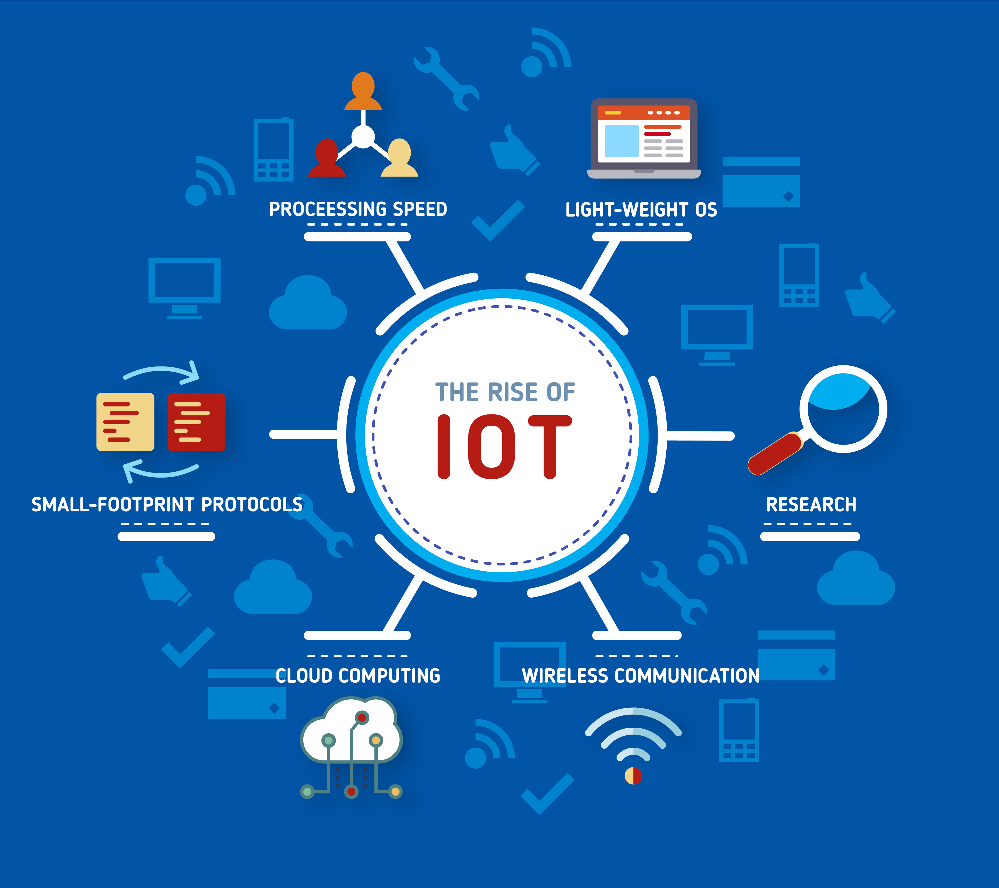
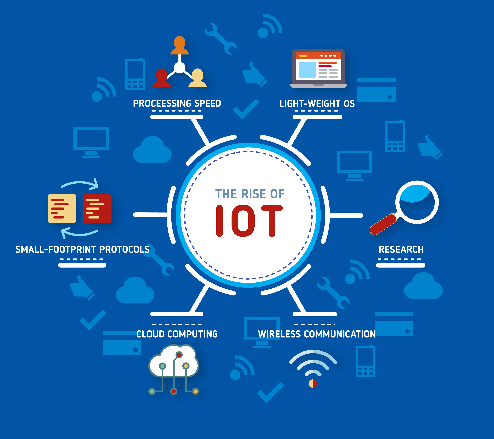

is characterized and alluded to by IoT as a PC idea that communicates the possibility of various physical gadgets interfacing with the Internet and the capacity of every gadget to recognize itself to different gadgets. It is a virtual system that joins different things arranged inside gadgets, programming, sensors and engines and associates them by means of the Internet, which permits these things to trade information between them.
It is important that the expression "things" in the Internet of things isn't simply constrained to coolers and little gadgets. A "thing" might be an individual with a pulse screen, for instance, or a kid with a tracker, a vehicle outfitted with sensors, home lighting frameworks and strip malls. Major, candy machines, and so forth., to put it plainly
 
